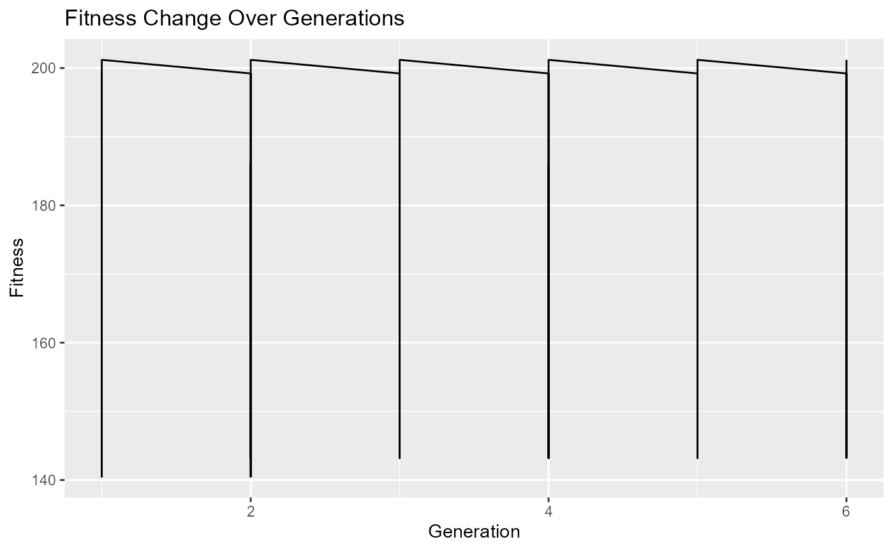

Genetic Algorithm Optimization Vignette
This vignette provides a step-by-step explanation of a genetic algorithm optimization process using the BioGA package.
Chapter 1: Initialization
# Load the BioGA package
library(BioGA)
# Example genomic data
genomic_data <- matrix(rnorm(50), nrow = 10, ncol = 10)
# Initialize population
population <- initialize_population_cpp(genomic_data, population_size = 5)
# Initialize fitness history
fitness_history <- list()
# Initialize time progress
start_time <- Sys.time()Chapter 2: Genetic Algorithm Optimization
# Run genetic algorithm optimization
generation <- 0
while (TRUE) {
generation <- generation + 1
# Evaluate fitness
fitness <- evaluate_fitness_cpp(genomic_data, population)
fitness_history[[generation]] <- fitness
# Check termination condition
if (generation==6) {
break
}
# Selection
selected_parents <- selection_cpp(population, fitness, num_parents = 2)
# Crossover and Mutation
offspring <- crossover_cpp(selected_parents, offspring_size = 2)
# (no mutation in this example)
mutated_offspring <- mutation_cpp(offspring, mutation_rate = 0)
# Replacement
population <- replacement_cpp(population, mutated_offspring,
num_to_replace = 1)
# Calculate time progress
elapsed_time <- difftime(Sys.time(), start_time, units = "secs")
# Print time progress
cat("\rGeneration:", generation, "- Elapsed Time:",
format(elapsed_time, units = "secs"), " ")
}
#>
Generation: 1 - Elapsed Time: 0.04917407 secs
Generation: 2 - Elapsed Time: 0.04976892 secs
Generation: 3 - Elapsed Time: 0.04987597 secs
Generation: 4 - Elapsed Time: 0.04996204 secs
Generation: 5 - Elapsed Time: 0.05001187 secsChapter 3: Results Visualization
# Plot fitness change over generations
plot_fitness_history(fitness_history)
This vignette demonstrates how to implement a genetic algorithm optimization process using the BioGA package, from initialization to results visualization.